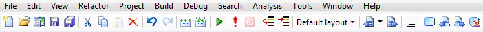
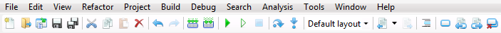
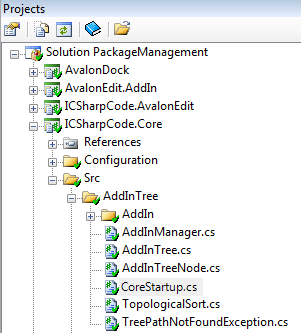
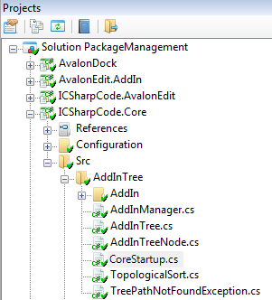
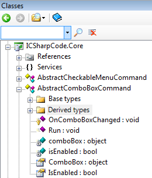
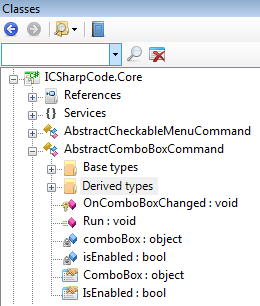
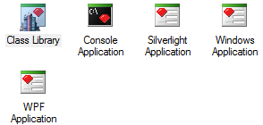
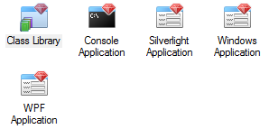
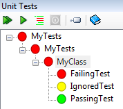
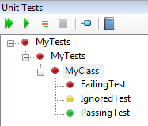

Thanks to Yusuke Kamiyamane's Fugue Icons, and icons created and remixed by Michael Seeger, SharpDevelop 4.2 has a new look. A selection of before and after screenshots are shown below:
SharpDevelop 4.1 Toolbar

SharpDevelop 4.2 Toolbar

| SharpDevelop 4.1 | SharpDevelop 4.2 |
|---|---|
|  |  |
|  |  |
|  |  |
|  |  |